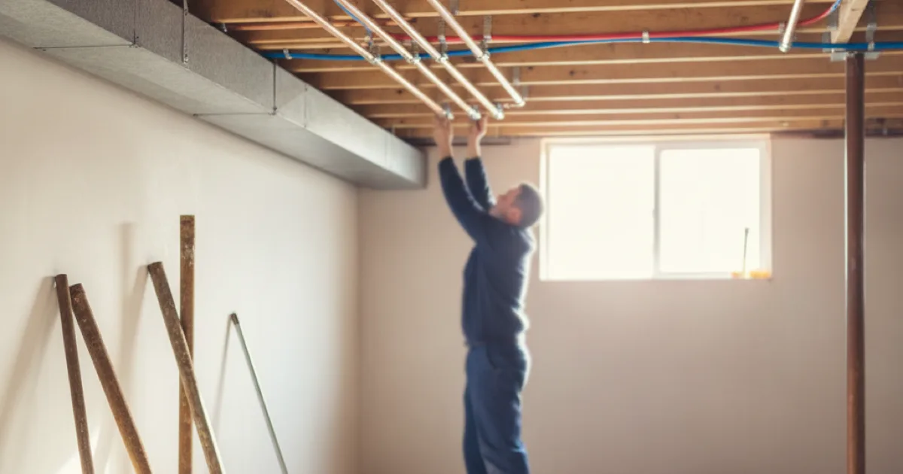

Repiping & Pipe Replacement in Westchester County, NY
Repiping is a big job and we will not push you toward it. But when a house has reached the point of repeat failures, it is usually the cheaper decision — and here is how to tell.
- Licensed & Insured
- Upfront Pricing
- Clean, Respectful Technicians
- 15+ Years of Experience

When it is actually time
Most houses never need repiping. The ones that do usually show several of these at once rather than just one:
- Repeat pinholes on the same system. The clearest signal. One is bad luck; three in two years is a pattern, and the pattern will continue.
- Galvanised supply lines still in service. They corrode internally until flow is badly restricted. Once pressure has dropped noticeably, replacement is the only real fix.
- Rusty or discoloured water on both hot and cold, which points at the piping rather than the water heater.
- Polybutylene supply pipe, given its failure history.
- Pressure that has fallen across the whole house with no single cause found.
- Open walls for another reason. If you are already renovating, this is by far the cheapest this work will ever be.
If none of those apply, single-section pipe repairs are the sensible route and we will happily keep doing them. Repiping a sound system is money spent on nothing.
Not sure whether you have reached that point?
Tell us the history and we will give you a straight assessment.
What we would put in
Both of the sensible modern options are good. They suit different situations, and anyone who tells you one is universally superior is selling rather than advising.
Copper. Long-established, rigid, tolerant of heat, and unaffected by sunlight or rodents. It costs more in both material and labour, and in areas with aggressive water chemistry it remains susceptible to the same pinhole corrosion that may be why you are repiping in the first place.
PEX. Flexible, which is its main practical advantage — long runs can often be pulled through existing cavities with far less opening of walls and ceilings. Cheaper and faster to install, and it tolerates freezing better than rigid pipe, which matters in a house with pipes in exterior walls or unheated spaces.
In an occupied older house, PEX frequently wins on disruption alone, because it turns a job requiring extensive wall opening into one needing far fewer access points. In an exposed basement or where runs are visible, copper often looks and performs better. Frequently the right answer is both, in different parts of the house.
This Old House has a fair comparison of PEX and copper for home plumbing if you want an independent view alongside ours.
What it is like to live through
This is the part people worry about most and ask about least, so here is an honest picture.
- Water is off for parts of the day, not the entire job. We usually stage the work so the house has water overnight.
- There will be access holes. How many depends heavily on the material chosen and the layout. We plan them deliberately, in the least visible places that work.
- We do not patch and paint. Drywall repair and decorating are a separate trade, and we will tell you upfront roughly what will need doing so you can arrange it.
- It is permitted, inspected work in most municipalities here, which we handle.
- It is dusty and it is noisy while it is happening. We protect floors and clean up daily rather than at the end.
A whole-house repipe is usually a matter of days rather than weeks for a typical home. Partial repiping — replacing the worst runs rather than everything — is often a reasonable middle path, and worth discussing if a full job is not the right decision this year.
What affects the cost
A repipe is priced per property, and we walk it before quoting. The number depends far more on the house than on the pipe.
Main factors: the material chosen, since PEX is usually cheaper and faster to install than copper; how much of the plumbing is being replaced; how accessible the runs are, which decides how much wall needs opening; and whether it is done in one go or staged. Drywall repair and decorating are a separate trade, and we flag roughly what will need doing so you can plan it.
How a repipe goes
A whole-house repipe is usually a matter of days rather than weeks for a typical home. We stage the work so the house has water overnight, run the new lines with as few access openings as the material allows, and test everything under pressure before closing up.
It is permitted, inspected work in most municipalities here, which we handle. We protect floors, clean up daily rather than at the end, and tell you upfront where access holes will be so nothing about the job is a surprise.
Common questions
Can you repipe without opening every wall?
Usually, especially with PEX, which can often be routed through existing cavities and from the basement. Some access is always needed, but far less than people expect.
Do I have to replace the waste pipes too?
Not necessarily. Supply and waste are separate systems and fail for different reasons. Plenty of houses need supply lines replaced while the waste stack has years left. We assess them separately.
Will repiping fix my water pressure?
If the cause is corroded galvanised pipe narrowing internally, yes, often dramatically. If the cause is the supply from the street or a pressure regulator, no — which is why we establish the cause before recommending the job.
Is it worth doing before selling?
Depends on the market and what a survey would turn up. Known polybutylene or badly corroded galvanised piping tends to affect a sale. Sound copper with one past repair generally does not.
Can it be done in stages?
Often yes — bathroom by bathroom, or worst runs first. Slightly less efficient overall, but it spreads both the cost and the disruption, and for many households that is the right trade-off.
Get an honest assessment first
Licensed, insured, and happy to tell you it is not time yet.